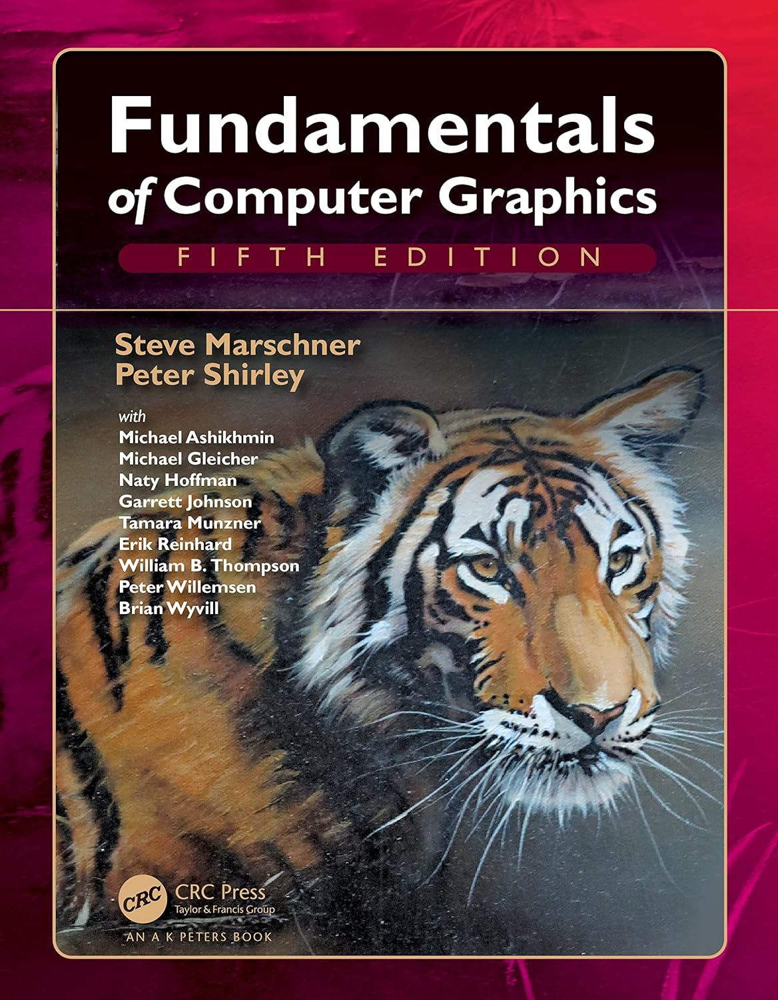
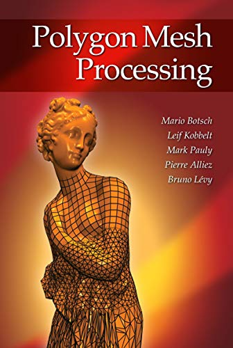
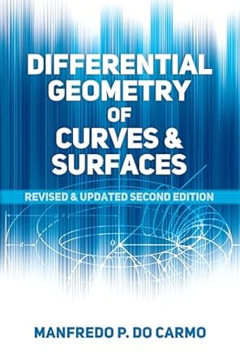
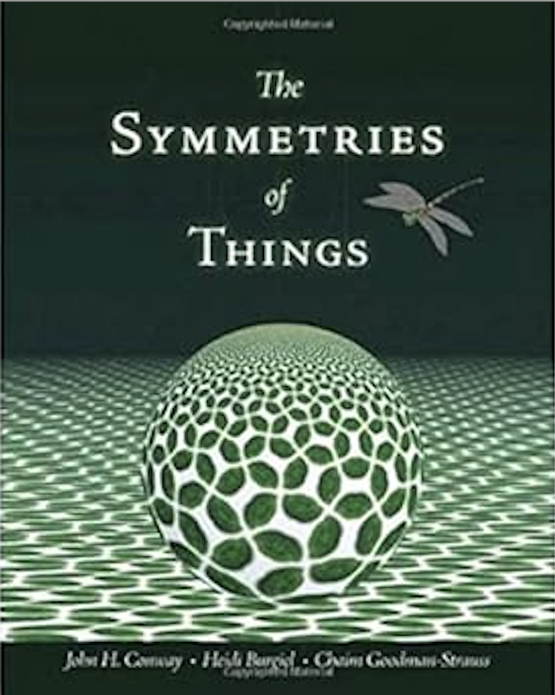

Reading makes us smarter! There's only so much an instructor can cover. But reading books can provide you more. I encourage you to commit to read at least one of the books from the list page to page. This might not directly help with your grade, because the improvement is not observable overnight. But it's very beneficial to develop your depth of thinking. I hope you are excited to read and can be persistent. If you have the budget to get hard copy of one book and commit, I encourage it.




Always ready to get your hands dirty! We are all software engineers to some point, regardless rank/title. To do well in graphics, it adds on top understanding artists needs. Take it as leisure to follow one of the suggested tutorials (Applied Houdini, or Blender Donut), and check out what top-notch software tools can do and can't do. Don't just watch the videos. In order for learning to happen, you need to install the software and follow the videos step by step to implement.
Course Information
This course provides a fundamental introduction to computer graphics with hands-on opportunities. We cover four main subfields of graphics in the lectures, including rendering, geometry, animation, and simulation. The focus is geometry. We begin our journey from image processing, spend time studying the rendering of three-dimensional scenes using ray-tracing techniques, adding texture to surfaces, exploring the tessellation problem on Euclidean plane with wallpaper groups, and looking into how to animate an animal in a industrial pipeline. During the lectures, there will be a short break every 45 minutes, because super long didactive lectures are unhelpful for focusing. During the break, we will be watching either two SIGGRAPH technical paper trailors from the past 10 years or a classical short computer animation movie.
Course Objectives
By the end of this course, you will be ready to
Build graphics applications with C++.
Be ready to take more advanced graphics courses (e.g. Computational Geometry, Computer Animation, Geometry Processing, Discrete Differential Geometry, Neural Geometry Processing).
Position yourself for jobs in gaming, entertainment, chip industry involving graphics, NASA or other national labs involving scientific visualization.
Prerequisites
Some knowledge of linear algebra.
You know one programming language well. Very likely this is Java or Python. In this course, we are going to use C++. It is my expectation that you have not seen C++ before. You can transition to it from other languages under my guidance. For the record, C++ is the industry standard because you need it to modify/customize a graphics library. It is a necessary skill, to independently contribute any fundamental change to the libraries.
We are going to specifically use modern C++ (14/17/20).
Q: "Is this scary though?"
A: "No. It is just new. I can do everything to help you speed up. And you only need to learn the parts as you need."
Rubric (it is possible to earn more than 100%)
4 coding assignments (at home, C++). Assignments are designed to be independent on purpose. So that you are not punished multiple times for bugs from a previous assignment. With that said, you’re welcome to combine the code from previous assignments if that makes the art contest cooler. In total 70%.
No final, 2 quiz-like midterms, 10 short questions each. Tentative dates for midterms (subject to adjustment at the instructor's discreetionary): midterm1 October 15, midterm2 November 19. Each 15%.
Each assignment should be considered as a separate art contest. One winner is selected per assignment to get some extra credit. 7% tops, at the instructor's discretionary.
If the student finished reading at least 3 book chapters of the suggested books, or accomplished a Houdini/Blender demo by following the suggested tutorials, it's possible to get extra credit with a final presentation. If you're doing the demo, the presentation needs to include a live walkthrough of how you got the result, not only showing the result. 15% tops, at the instructor's discretionary.
Mini coding/math exercises (in class, python/pencil). Pair-coding. Not graded.
The grade system follows the University Grading System:
A = 95+
A- = 91 – 94
B+ = 87 – 90
B = 83 – 86
B- = 80 – 82
C+ = 77 – 79
C = 73 – 76
D+ = 67 – 69
D = 63 – 66
F = 0 – 62
Course Policies
You are not allowed to find a partner or collaborator to write the code of assignments. Learning happens when coding happens. You need to rely on yourself. If two identical assignments are handed in, both students will be accountable for cheating (no questions asked), and you will get zero for the entire course (not just the assignment).
It is ok to use ChatGPT for debugging but not ok for generating code. Meaning you can copy and paste your error message and ask ChatGPT what it means/how to fix it. You cannot input the assignment description and ask ChatGPT to implement things for you. If you did use ChatGPT, which is expected, you’d need to include a proper citation in your homework submission. The citation means screenshots of what exactly you put as prompts, and what answers you got. The reason is you need to have insights in order to earn any credit for your assignments.
Throughout the semester, you have in total 4 unexcused late days (no explanation needed), and 2 excused late days (I will ask what happened). In order to use the late days, you need to include at the beginning of the submitted html file how many late days you used for this specific assignment. (Hint: Assignments 1 and 4 are relatively lighter. You might want to use your late days on Assignments 2 and 3.)
You are encouraged to post questions/bugs on Piazza for open discussion.
Intended Course Roadmap
Week Num.
Lecture Slides
Other Helpful Resources
Week 1
Welcome
Week 2
Math Preliminary
Week 3
Software Tools Part 1 (Linux/Unix commands, CMake, basics of modern C++, Libigl, Polyscope)
Week 4
"Morfing"
Week 5
Spatial Transformations
Week 6
Software Tools Part 2 (How to write a GUI)
Week 7
Rendering Equation
Week 8
Homography And Texture
Week 9
Intro To Tiling Theory
Week 10
Intro To Geometry Part 1
Week 11
Intro To Geometry Part 2
Week 12
Intro To Animation
Week 13
Intro To Neural Geometry Processing And Neural Simulation